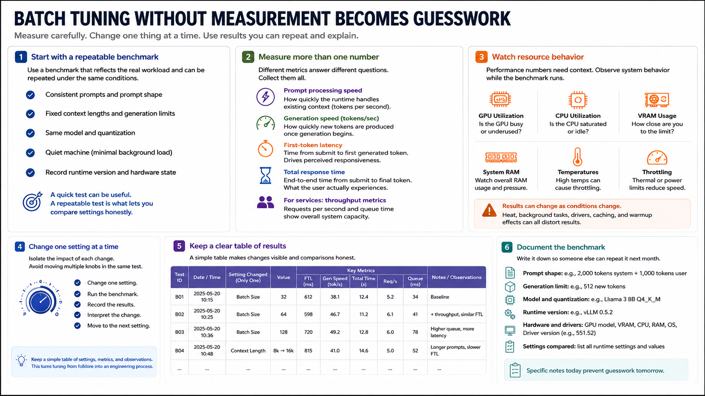

Measuring Performance Correctly
Connecting to LMS... Progress: in progress

Narration
Batch tuning without measurement quickly becomes guesswork. Start with a repeatable benchmark that reflects the real workload. Use consistent prompts, fixed context lengths, the same model and quantization, and a quiet machine. Record the runtime version and hardware state so you can explain results later. A quick test can be useful, but a repeatable test is what lets you compare settings honestly.
Measure more than one number. Prompt processing speed tells you how quickly the runtime handles existing context. Generation speed, often reported as tokens per second, tells you how quickly new tokens appear. First-token latency tells you how responsive the system feels. Total response time shows what the user experiences end to end. For services, also track requests per second and queue time.
Watch resource behavior while the benchmark runs. GPU utilization, CPU utilization, VRAM use, system RAM, temperatures, and throttling can explain why a setting improved or failed. A result that looks fast during a cool one-minute test may degrade after the hardware heats up. Background tasks, driver activity, caching, and warmup effects can also distort results.
Change one setting at a time whenever possible. If you increase batch size, change context length, and raise concurrency in the same test, you may get a number but you will not know what caused it. Keep a simple table of settings, metrics, and observations. The discipline of measurement is what turns tuning from folklore into an engineering process.
For team use, write down the benchmark as if someone else will repeat it next month. Include the exact prompt shape, generation limit, runtime version, model file, quantization, hardware, driver version, and the settings being compared. The notes do not need to be elaborate, but they should be specific enough to prevent a future tuning conversation from becoming guesswork again.